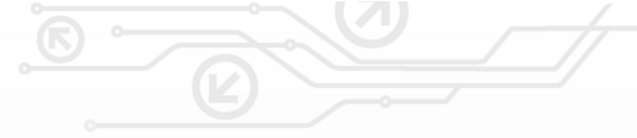
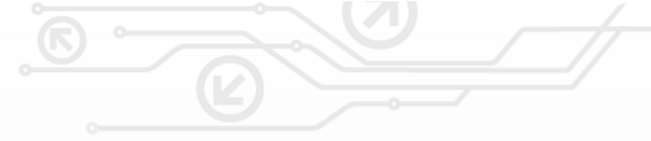

Tim ODS Lolos GEMASTIK 11
28 Oktober 2018
Salah satu tim mahasiswa Fakultas Ilmu Komputer (Fasilkom) Universitas Jember (UJ) lolos babak final mewakili Universitas Jember dalam ajang Gemastik 11 yang akan dilaksanakan pada tanggal 3 November 2018, bertempat di Institut Teknologi Sepuluh November (ITS). Gemastik atau Pagelaran Mahasiswa Nasional bidang Teknologi Informasi dan Komunikasi Tahun 2018 merupakan program yang diselenggarakan oleh Direktorat Penelitian dan Pengabdian kepada Masyarakat (DP2M) DIKTI, sebagai upaya untuk meningkatkan....
Baca Selengkapnya